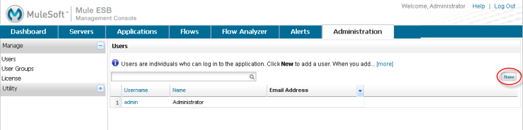
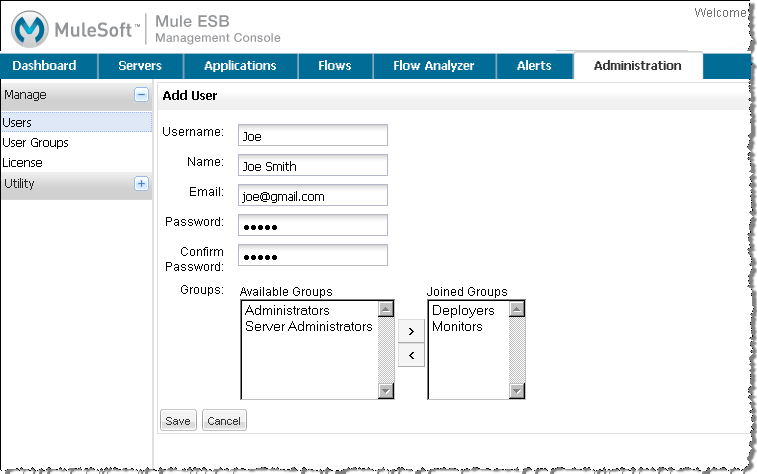
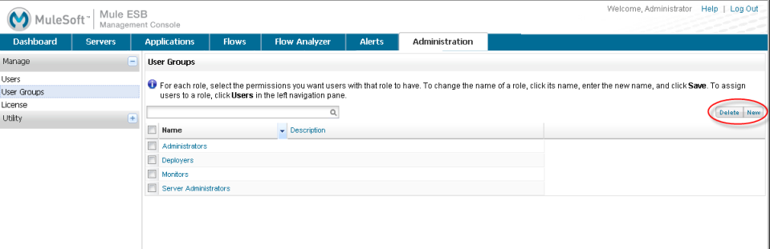

Managing Users and Roles
Use the Administration tab in the management console to manage users and roles. The management console lets you define users and assign these users to roles, which are referred to as groups. You can also create groups and give them permissions to perform certain tasks. In addition, you can validate and submit the management console license from this tab.
Users are individuals who can log in to the console. Groups allow you to assign permissions collectively to a group of users, such as granting certain users the Administrator role, which has across-the-board permissions.
You can also use LDAP to enable authentication (see Enabling Authentication Through LDAP). Note that after enabling authentication through LDAP, the Users link is no longer available.
See Automating Tasks Using Scripts for an explanation of the Utility options (Admin Shell and Scheduler).
Managing Users
This section describes how to create, edit, and delete a user in the management console.
To create a user:
-
On the Administration tab, click Users in the Manage section of the navigation tree on the left. The pane lists all current console users. Click the New button (circled in the figure below) to create a new user.
 -
Enter the user name that the user will enter when they log in to the management console, as well as the user’s full name, email address, and password (note that the password must be at least five characters).
 -
Select at least one group from the Available Groups list. The new user will be added to the groups you select. Keep in mind that once the user joins a group, that user has the permissions granted to that group or groups. Use the right angle bracket (>) to move the selected role to Joined Groups.
The default groups are Administrators, Deployers, Monitors, and Server Administrators. If you need to create more groups or roles, see mmc:Managing Groups below. -
Click Save.
To edit a user:
-
On the Administration tab, click Users, and then click the username of the user you want to edit.
-
Edit the user’s name or email address if needed.
-
If you need to reset the user’s password, click Reset Password, enter the new password twice, and then click OK.
-
To assign the user to a group, select the group in the Available Groups list and click > so that the group appears in Joined Groups. To remove the user from a group, select the group in the Joined Groups list and click <.
-
When you have finished editing this user, click Save to keep your changes, or Cancel to undo any changes.
Managing Groups
This section describes how to add, manage, and delete a user group, also referred to as a role, in the management console. Note that you cannot delete the Administrators group. The other three groups (Monitors, Deployers, and Server Administrators) model typical roles for console users and have been set up for your convenience.
Adding a new user group, or editing an existing group, entails setting server group permissions and global permissions. Server group permissions define the server groups that the user role or group can manage. The default console server groups are listed, including All servers, plus any server groups you may have created. There are also a set of permissions that apply specifically to servers, including permissions for file access, thread management, and server management.
The global permissions define the permissions that this group has regarding deployment, applications, alerts, flows, and so forth. See Understanding Permissions for more information.
Adding a User Group
-
Click User Groups in the navigation tree to see the existing user groups (roles).
 -
Click New to create a new group.
-
Enter the name of the new group, and optionally, a description.
-
Select the global permissions from the list on the left. Use the Select All button at the bottom of the list to give this user group all global permissions. Or, check only those permissions you want the user group to have.
-
Select the Server Groups from the pull-down list that this user group can act on. Then, select the server group permissions from the list on the right. Use the Select All button at the bottom of the list to give this user group all server permissions for the designated server groups. Or, check only those permissions you want the user group to have.
-
Click Save.
[mmc:Mule 3.2]
Two cluster-related permissions are also listed in the server group permissions: Clusters - Create and Cluster- Disband.
Managing Group Permissions
-
Click User Groups in the navigation tree to see the existing groups.
-
Click the particular user group that you want to edit.
-
Use the Edit User Group screen to change the name, description, and modify the server and global permissions. Changing the server group access, server permissions, and global permissions is the same as for adding a new user group. (See the previous figure.)
-
Select the global permissions from the list on the left. Use the Select All button at the bottom of the list to give this user group all global permissions, or Unselect All to remove or uncheck all permissions. Or, check only those permissions you want the user group to have.
-
Select the Server Groups from the pull-down list that this user group can act on. Then, select the server group permissions from the list on the right. Use the Select All button at the bottom of the list to give this user group all server permissions for the designated server groups, or Unselect All to remove or uncheck all permissions. Or, check only those permissions you want the user group to have.
-
Click Save to save any changes you make, or click Cancel to undo your changes.
Understanding Roles and Responsibilities
Assigning individual users to user groups, equivalent to assigning them a role, is particularly important from a security perspective, since you are granting that user all the privileges and rights granted to the entire user group. Likewise, setting up the permissions for a user group is extremely important.
Whether you are modifying the permissions for the default user groups or setting up your own user groups, you need to consider the "actors" who will be in each user group and the use cases that these actors will be performing. In conjunction with these use cases, you can further fine-tune these permissions via server groups. By grouping servers into logical categories (Testing, Production, Development, Staging and so forth), you can give some groups more permissions for development and testing, but keep staging and production server environments more restrictive and thus more secure.
For example, you may want to define a user group for application developers. This group of users will need to test and debug their code before their applications are ready for production. Thus, you will need to give this group permissions for tasks related to deployment, endpoint and flow control. But at the same time, you may feel it desirable to restrict the operations that this group can perform on existing deployments – for example, deny them the ability to delete deployments, on any server. You can also use server permissions to allow this group to perform certain operations only on specific servers. For example, you can give the group the ability to view or kill threads only on your designated test servers. To do this, you need to:
Create the group of test servers and assign specific server(s) to it.
Assign the desired group(s) the desired permissions for the specific server group.
(Bear in mind that the permissions you can apply per server are currently limited. For details, see Server Permissions Reference below.)
If you create a test environment, you might want to use it to set up and verify specific deployment scenarios prior to using them in a production environment. You might want to allow special permissions for these servers for only certain user groups. For example, you can assign the ability to restart these servers only to specific user groups.
You might also want a category of support technicians to have capabilities similar to developers, but on staging and production servers. You might have a support group handling sensitive accounts to which you give virtually all permissions.
You might have other user groups whose responsibilities rest more on system administration tasks. For these groups, you may want to give them permissions to manage other users, execute scripts, and manage alerts across all server groups.
Understanding Permissions
Permissions give specific user groups the ability to carry out certain sets of tasks. Tasks can be server-related, such as registering or unregistering a server, or they may pertain to applications, such as deployment and flow control functions, or specific users, and so forth. since permissions granted (or not granted) represent the security on your system, you should be particularly careful when assigning permissions to new user groups or modifying the permissions of existing groups.
-
Global permissions give all users in a group the ability to perform certain tasks, ranging from viewing deployments, to controlling flows and managing users.
-
Server permissions range from viewing and deleting files, controlling servers, and killing threads. A user group’s server permissions may apply to all servers or to only a specified server group.
[mmc:Mule 3.2] The server permissions also permissions for two cluster-related activities: creating a cluster or disbanding a cluster.
The user groups provided by default (Administrators, Deployers, Monitors, and Server Administrators) have each been given a set of global permissions and server permissions. Both Administrators and Server Administrators by default have been given all global and server permissions; that is, they function as super user (in the UNIX world). It is important that these user groups retain these permissions to keep the servers fully functional. However, you should exercise care when assigning individual users to either of these groups, since each such user would immediately have these same permissions.
[mmc:Mule 3.2] By default, the Administrators and Server Administrators groups also have Clusters - Create and Cluster- Disband permissions.
The two additional default user groups (Deployers and Monitors) have a very limited set of permissions. These two user groups have been included to illustrate the sort of granularity you might employ when assigning permissions to a group. For example, for Deployers, you might only want to grant them permissions related to deployments (create, delete, deploy, modify, and view deployments). You might create a user group called User Administrators, who can only add new users to the system, and give them the manage users permission only.
You can modify permissions for existing user groups, such as the user groups provided by default. You can also create new user groups and then assign global permissions to that group, plus specify whether that user group can act on all servers or just a particular server group.
Global permissions encompass the following areas and may be given as noted below to a user group:
-
Applications: A user group may be given the ability to only view applications and/or to control (start, stop, restart) applications
-
Audit flows: A user group can have the ability to audit flows via the Flow Analyzer tab.
-
Deployments: A user group may be given one or more deployment-related permissions: create, delete, deploy, modify, or view deployments.
-
Endpoints: A user group may be given the ability to start and stop endpoints.
-
Execute scripts: A user group may be given the ability execute scripts
-
Flows: A user group may be given the ability to only view flows and/or to control flows (start, stop, clear statistics)
-
Manage alert definitions: A user group may be given the ability to manage alert definitions.
-
Manage alert destinations: A user group may be given the ability to manage alert destinations.
-
Manage alert notifications: A user group may be given the ability to manage alert notifications.
-
Manage server groups: A user group may be given the ability to manage server groups.
-
Manage user groups: A user group may be given the ability to manage user groups.
-
Manage users A user group may be given the ability to manage users.
-
Pools A user group may be given the ability to modify pools.
-
Repository items: A user group may be given the ability to delete, modify, and/or read a repository item.
-
View activity: A user group may be given the ability to view activity.
-
View alerts: A user group may be given the ability to view alerts
Server permissions include the following and apply to the specified server group or all servers:
-
[mmc:Mule 3.2] Clusters: A user group may be given the ability to create or disband a cluster.
-
Files: A user group may be given the ability to manage delete, modify, and/or view files.
-
Servers: A user group may be given the ability to modify, register, restart, unregister, and/or view servers.
-
Threads: A user group may be given the ability to view and/or kill threads.